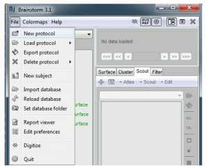

MEG/EEG decoding tutorial
The following tutorial will show you how to perform basic MEG/EEG preprocessing, put the data in raster format, and perform decoding using the MEG/EEG data. This tutorial will use the Isik 26 letter MEG dataset. This tutorial assumes that one is already familiar with the basics of the NDT as covered in the introductory tutorial.
Before you begin, you will need to download the additional MEG decoding functions, and add them to your toolbox path.
About the Isik 26 letter dataset
The Isik 26 letter MEG dataset was collected by Leyla Isik in Tommy Poggio s lab and the MEG Lab at the McGovern Institute at MIT. The data was used in Figure 2b of the paper: The dynamics of invariant object recognition in the human visual system, J. Neurophys 2014. The data consists of 306 channel (comprised of 102 magentometers, and 204 planar gradiometers) MEG recordings from an Elekta Neuromag Triux Scanner. One subject was shown 26 black, upper-case letters, on a white background, while their neural response was recorded in the MEG scanner. Each letter was presented approximately 50 times. The data is in raster-format, and each trial consists of 233 ms of baseline data where the subject viewed a fixation cross, followed by 50 ms of data when the subject viewed the image of one letter, and 417 ms of data when they again viewed a fixation cross.
You can load the MEG data in 2 formats - the raw MEG files output by the scanner (.fif format) and raster format. The raw data download also includes a file with raster labels indicating which stimulus was shown in each trial.
The first part of this tutorial outlines how to pre-process this data and convert it to raster format. If you are using the pre-processed raster data you may skip to the decoding section of the tutorial.
Download Brainstorm and preprocess data
We will use Brainstorm - a collaborative, open-source application dedicated to MEG/EEG/sEEG/ECoG data analysis - to preprocess our MEG data. If your MEG data is already preprocessed or you prefer a different preprocessing method, you may skip these steps.
If you would like to use another MEG data format (besides .fif), please see the Brainstorm website for instructions on how to load it into Brainstorm and complete the preprocessing using the Brainstorm GUI.
First, follow the Brainstorm download and installation instructions.
Preprocess MEG data
To preprocess our MEG data, we will first import our MEG events (based on experimental triggers) to Brainstorm and then perform bandpass filtering (0.1-100Hz) to remove external noise. You may follow the Brainstorm tutorial to perform this via their GUI. Or run the following code:
Before you run the script, you must open brainstorm (in Matlab), and create a new Brainstorm protocol. To create a new protocol, click on the file menu and select “New protocol”, and name this protocol ‘MEG_decoding_tutorial’.

Next, you will run the preprocess_with_brainstorm function in Matlab. To do this, specify your RawFilePath (file directory containing your raw MEG .fif files), fileNames (a cell of strings containing the names of your .fif files), and the epochTime (time interval you would like to extract relative to stimulus onset.
RawFilePath = 'Isik_26letter_fif/'; % Change to the appropriate filepath on your computer
fileNames = {'cbcl000.fif', 'cbcl000-1.fif'};
epochTime = [-0.2, 0.6]; % -200:600 ms relative to stimulus onset - used in Isik 2014
preprocess_with_brainstorm(RawFilePath, fileNames, epochTime)Convert data to raster format
Brainstorm saves your imported and pre-processed MEG data in the folder: brainstorm_db/<protocol_name>/data/<subject_name>/<trigger_number>
We will next convert the data to raster format. To do this you will need to put your stimulus labels in the structure raster_labels - a structure that contains cell arrays that lists the experimental conditions that were present on each trial (each cell array has as many entries as there are rows in the raster_data matrix, so that there is an experimental condition label for each trial). For example, raster_labels. For example, the variable raster_labels.stimulus_ID contains the labels for which of the 26 stimuli was shown on each trial. The trials in raster_labels should be ordered first by trigger number, and then by stimulus presentation. For example, here we use only one trigger, so the labels are in the order they appeared in the experiment.
Next, you will run the convert_to_raster function in Matlab. To do this, specify the following variables: brainstorm_db (brainstorm database folder), protocol (protocol name), raster_label_file (name of the file containing your raster_labels), raster_folder (folder to save raster data to), time (length of epochTime indicated above), and triggers (a vector of the trigger IDs used in the experiment).
(Please note this will take a couple of minutes to run).protocol = 'MEG_decoding_tutorial';
raster_labels_file = 'Isik_26letter_raster_labels.mat';
raster_folder = 'Isik_26letter_rasters/';
time = length(epochTime); %801
triggers = 1;
convert_to_raster(brainstorm_db, protocol, raster_labels_file, raster_folder, time, triggers)Decoding MEG data
Setting the path and binning the data
Before continuing this tutorial, make sure that the path to the NDT has been set as described here. For this tutorial we will use binned-format data that consists of the MEG data in a 50 ms windows. The following code shows how to create this binned data.raster_folder = 'Isik_26letter_rasters/' % change to your file path
save_prefix_name = 'Binned_Isik_26letter_data';
bin_width = 50;
step_size = 50;
create_binned_data_from_raster_data(raster_folder, save_prefix_name, bin_width, step_size);Creating a classifier and a preprocessor
Next we will create a classifier object and a preprocessor object. We will use the same classifier and preprocessor as was used in the basic tutorial. In addition, we will use an additional feature preprocessor, the select_or_exclude_top_k_features_FP. The MEG data contains recordings from 306 channels, many of which do not contain visual information and are thus helpful to remove. This preprocessor selects the top k most informative channels based on a ANOVA on the training data. For this analysis we will choose the top 25 features.the_classifier = max_correlation_coefficient_CL;
the_feature_preprocessors{1} = zscore_normalize_FP;
the_feature_preprocessors{2} = select_or_exclude_top_k_features_FP;
the_feature_preprocessors{2}.num_features_to_use = 25;Averaging stimulus repetitions
The strength of our decoding signal can be greatly improved if we average trials where the same stimulus was repeated. avg_DS implements the functions of the basic_DS with the additional feature that it can average together trials in a given cross validation split. We will use 5 cross validation splits with 10 trials each, and average together all 10 trials in each cross validation split. In addition, since the MEG data was collected simultaneously we will set the create_simultaneously_recorded_populations flag to 1.num_cv_splits = 5;
binned_data_file_name = 'Binned_Isik_26letter_data_50ms_bins_50ms_sampled.mat';
specific_labels_names_to_use = 'stim_ID';
nAvg = 10;
ds = avg_DS(binned_data_file_name, specific_labels_names_to_use, num_cv_splits, nAvg);
ds.num_times_to_repeat_each_label_per_cv_split = 10;
ds.create_simultaneously_recorded_populations = 1;the_cross_validator = standard_resample_CV(ds, the_classifier, the_feature_preprocessors);
the_cross_validator.num_resample_runs = 10;
DECODING_RESULTS = the_cross_validator.run_cv_decoding;
save_file_name = ['Isik_26letter_results_' num2str(bin_width) 'msbins_' num2str(step_size) 'mssteps'];
save(save_file_name, 'DECODING_RESULTS')Plotting the results
To plot all these results, we will use the same code as the standard tutorial. The standard decoding accuracy results are saved in the field DECODING_RESULTS.ZERO_ONE_LOSS_RESULTS.mean_decoding_results. Below we show how to plot the results we created above setting only a few of the possible parameters.result_names{1} = save_file_name;
% create the plot results object
plot_obj = plot_standard_results_object(result_names);
% put a line at the time when the stimulus was shown
plot_obj.significant_event_times = 233;
% display the results
plot_obj.plot_results;From looking at the results we can see that we can decode which letter the subject was viewing around 70 ms after image onset.
Conclusions
We recommend trying out this tutorial yourself in Matlab and experimenting with different datasource, feature-preprocessor, cross-validator and plotting parameters. Once you feel comfortable with this tutorial you can look at the generalization analysis tutorial which shows how to test whether neural representations contain information in an abstract/invariant format, or you can look at the getting started with your own data tutorial which shows the steps necessary to analyze your own data.
You can also run generalization analyses with your own MEG data. To get started, refer to the steps in the Generalization analysis tutorial and the avg_generalization_DS, which allows you to average trials together in the same manner as the avg_DS.
This tutorial was created by Leyla Isik